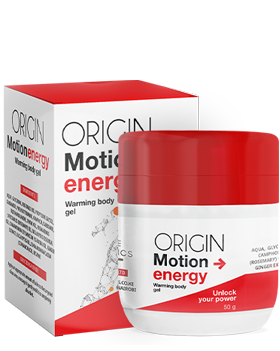

“When your joints won't let you lead a normal life, all you can do is hope for a miracle!”. An exclusive interview with the legendary man!
Our guest today is Ugandian legendary innovator, Mr. Benigno Tan.
Hello, Mr. Tan, could you tell us a few words about yourself?
I was born in Kampala. I graduated from the University of Uganda in 1975 and met my future wife Alicia there. We lived happily until 2011.
What happened in 2011 and why did you leave your job?
In 2009, Alicia was diagnosed with osteoarthritis of the knee joint. The truth is that it was a turning point in our lives, and at that time I thought it was terrible ordeal. My wife tried everything for the next two years: special physical exercise, ointment, and even stopped doing sport and took different vitamins and food supplements. It was all to no avail. Nothing helped her, and we were both completely destroyed. I couldn't believe there was nothing I could do to help my wife. We didn't find any available solutions to the problem, so I decided to find out if there was a way to give a long and happy life to my dearest person in the world. I started researching.
What research are you talking about? Could you explain us a little bit more about?
When you realize that your wife will not be able to walk within a few years, you want to do everything you can to avoid it. I studied all information related to joint diseases, whether directly or indirectly in the field of physiology, psychosomatics and biochemistry. I spent almost all my money to find out the secrets of the best Asian specialists in this field, who without a doubt understand the problems of patients with joint wear much better than we do.
In December 2011, I realized that if I mixed certain ingredients, I could obtain a product that can alleviate articular pain, but I was in for a surprise - the ingredients I needed weren't sold in Uganda, so I borrowed some money and ordered them from Asian countries. The necessary ingredients arrived in a month, but then another surprise awaited me - no one wanted to make the mixture I needed under laboratory conditions. Fortunately, I was saved by my friends from the university. 3 weeks later, I finally got the right formula and gave it to Alicia to test.
Oh my God! You cannot imagine how happy I was!
What? What happened?
Alicia started to feel better each day. After 7 days, she went to the supermarket and bought some food. That smile I missed so much appeared on her face. It seemed too good to be true, but the tests showed that Alicia was healthy, and I was in seventh heaven. It was a real victory!
You are a great man and an example to us all! Then you decided to go further, didn't you?
Not right away. At the beginning, we simply were enjoying life and appreciated every moment. Then, our beautiful daughter was born. Alicia was incredibly grateful because pregnancy also is a huge strain on the joints.
One day Alicia asked me if there were many people living in Uganda with joint pain. We looked at the statistics and discovered that there were a lot of people with the same problem. More than 1 million people living in Uganda have various diseases related to the joints. Then, she asked me a question that changed my life forever: “Can you help other people too and make them happy?” In that moment I fell in love with her again. I have to say that this woman is the best thing that has happened to me in my life and, obviously, I accepted. It took me about 3 years to perfect the formula and create Motion Energy - the thing that our country's residents can afford.
It sounds very promising. Tell us more about Motion Energy.
Alicia and I did something that nobody else had done before us. Motion Energy is based on:
- Freshwater sponge extract
- Callisia extract
- Fir oil
- Cayenne pepper oil
- Eucalyptus oil
- Essential oils of rosemary and ginger
- Vanilyl butyl ether
- Essential oils of cinnamon
- Camphor
Unfortunately, most of these ingredients are not sold in our country, so we bring them from abroad.
Thanks to its unique formula, Motion Energy might be able to help symptoms of:
- arthritis
- arthrosis
- coxarthrosis
- osteoarthrosis
- osteochondrosis
- osteochondritis
- osteoporosis
- meniscal injuries
- knee osteoarthritis
It's amazing! You are a true innovator of our time. How did you manage to do it?
You forget that it took me many years of hard work. Next year we will celebrate our 10th anniversary.
Honestly, Alicia and I didn't create it for the purpose of making money. We simply wanted people to be healthy. You can call us old-fashioned if you want.
Where can we buy Motion Energy?
Unfortunately, it is not yet possible to buy it in pharmacies.
Pharmacies are dominated by large commercial networks that very few
independent providers can enter. Moreover, they sell their products at
quite high prices.
Luckily, recently you can order the original Motion Energy ointment on the following website.
What would you like to wish our readers?
Recently, Alicia and I decided to lower the price of
Motion Energy by 50%, so now everyone can take advantage of this
offer! It will be available for a short period and after that
Motion Energy will no longer be sold at such a low
price.
Take care of your health! It is the best thing you can do. No amount of money will bring you happiness.
Good luck!
